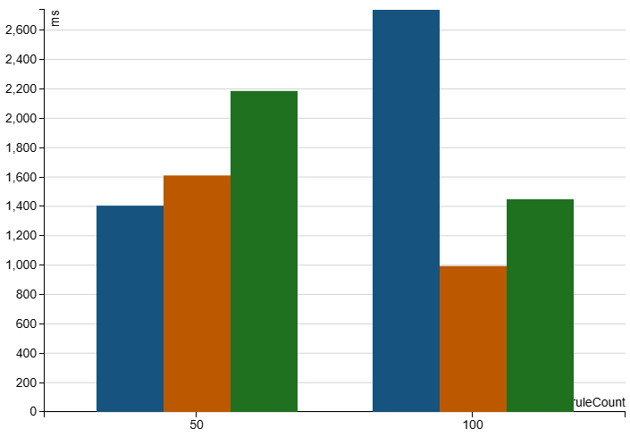
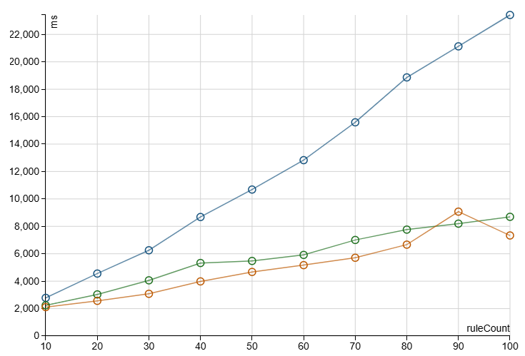
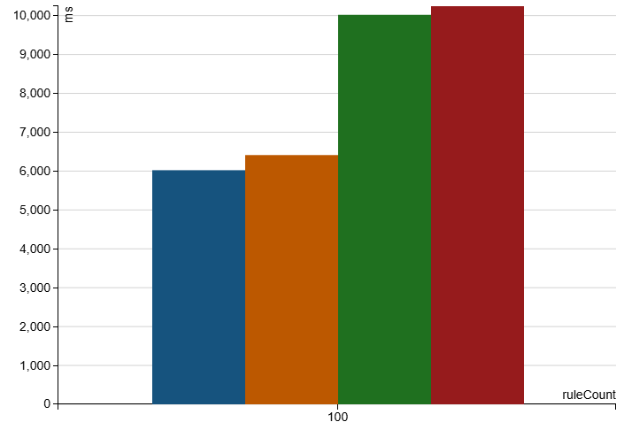
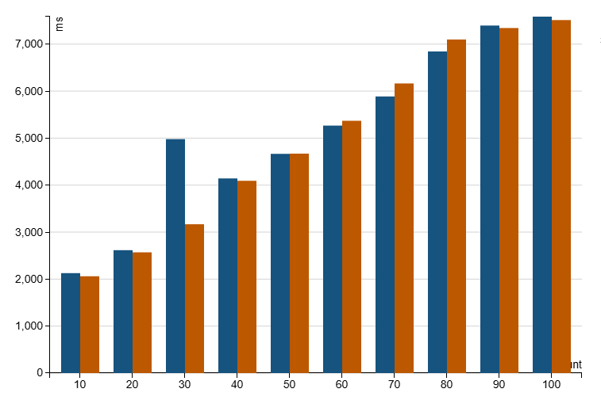

QualityCollector
collectRunner is expressly designed for the following rule pattern:
| Rule ID | Salience | Rule | Output Expression |
|---|---|---|---|
| 1 | 100 | a = '5' and b is not null and c > 100 | array(outputrow1, outputrow2, outputrow3) |
| 2 | 200 | a = '5' and c > 100 | array(outputrow4) |
Where the row (a,b,c) (5, 'value', 150) should have the output:
| Result |
|---|
| array(outputrow1, outputrow2, outputrow3, outputrow4) |
i.e. the Output Expressions of all matching rules should be added and flattened in salience order.
Quality prior to 0.1.4 offered ruleFolder as a general case 'run all the things which match' engine. The above pattern can be represented by:
| Rule ID | Salience | Rule | Output Expression |
|---|---|---|---|
| 1 | 100 | a = '5' and b is not null and c > 100 | set(resultArray = concat(currentResult.resultArray, array(outputrow1, outputrow2, outputrow3))) |
| 2 | 200 | a = '5' and c > 100 | set(resultArray = concat(currentResult.resultArray, array(outputrow4))) |
This is functionally identical but each rule involves two additional array creations and array copy's.
If this wasn't expensive enough the use of a Spark LambdaFunction disables all subexpression eliminations within those Output Expressions.
The CollectorThroughputBenchmark shows the following indicative results against 1m rows using 50 and 100 rules with Spark 4, the leftmost (blue) is Spark SQL, right (green) is folder and the middle is collectRunner:

The Spark SQL approach is:
flatten(filter(array(if(rule, line1, null), if(rule2, line2, null))..
with the filter removing nulls before flattening. Note that this Spark 4 run shows better performance for smaller RuleSuite sizes, where increasing the number of rules causes Quality's runners to take the lead.
Interestingly, the JIT seems to heavily optimise with the more complex 100 rules suite leading to a faster wall clock time for the Quality runs. Less interestingly, the same is true for increases in record counts, when jumping to 10m rows both Quality runners pull ahead with even just 10 rules:
collectRunner leads in these scenarios by efficient array allocations and by default auto flattening nested calls to array and not using filter (this uses a LambdaExpression and cannot be optimised out).
When the rule number falls below 50 Spark is faster, but this only holds on 1m rows of data, at 10m rows the performance of Quality runners pulls ahead for all rule counts e.g.:

with an unfortunate (assumed cpu) interruption on the 90 rule mark the trend is clear (top line is Spark array, middle is folder and bottom is collectRunner).
How can it be faster than normal Spark SQL?
collectRunner filters out for nulls without requiring intermediary array instances, any by direct result array access from the nested expressions.
collectRunner replaces Sparks CreateArray with a version (InPlaceArray) that only allocates one array per partition, Sparks creates a new array per row,
it then uses the array directly rather than going through indirect calls with casts etc.
So the equivalent spark of:
filter(array(if(a, null, oa), if(b, null, ob)), x -> x IS NOT NULL)
which is the same as using array_compact, requires at least three array creations as well as the overhead of the lambda,
which, as per folderRunner, cannot take part in sub expression elimination and other optimisation strategies.
Indeed filter currently cannot currently have subexpression elimination applied at all, this also includes the array input.
Of course Quality runners also provide an audit trail missing in the simple Spark SQL approach.
flatten = false, includeNulls = true needs Option
In Spark 3.4 and below not wrapping in Option will cause an NPE. See CollectRunnerTest for example encoding approaches.
defaultProcessor¶
If no trigger rules match the overallStatus for a RuleSuiteResult will be failed() and collectRunner, by default, will return an empty array.
It can be useful however to perform a specific output expression in this case, these can either be directly specified or loaded via with
0.2.0's Connect friendly combine functions or via the serializing integrateRuleSuites functions.
To clearly separate a Passed trigger rule vs. a defaultProcessor result DefaultRule is stored in the RuleSuiteResult.overallResult, although every other RuleSet.overallResult and ruleResult will be Failed.
The alternative from an sql perspective is to use another projection and an 'if' on the resulting array to default, or specify the sql rule twice directly in an if (assuming subexpression elimination will take place).
The benefit of evaluating without a separate projection is clear:

The two left most (blue and orange) are using collect with the defaultProcessor on the left. The two right most are Spark SQL, with the 2nd from the right being a repetition of the SQL rules snippet in the same projection, and the right most being a separate projection. e.g.:
| Type | Logic Used | Projection | Mean time taken in ms |
|---|---|---|---|
| collect defaultProcessor | ruleSuite.copy(defaultProcessor = DefaultProcessor(Id(10000,1), OutputExpression("array(…)") | result.result | 6022.40 |
| collect default logic in projection | ruleSuite | if(size(result.result) > 0, result.result, array(…)) | 6412.10 |
| Spark SQL repeated logic | expr(s"if(size($theExpression) > 0, $theExpression, array(…))") | result | 10020.00 |
| Spark SQL default logic in projection | expr(s"$theExpression") | if(size(result) > 0, result, array(…)) | 10242.19 |
Performance Tweaking Options¶
InPlaceArray¶
collectRunner, by default, swaps Spark's CreateArray for InPlaceArray, which only allocates a single array per partition. In general, it performs as well as, if not better, than using CreateArray, but that's not always the case, e.g.:

Here, aside from the measurement blip, the orange bar (right of the bar pairs) are the runs using CreateArray against 10m rows. The difference is performance for using InPlaceArray can be significant, as such it is configurable when calling the ruleSuite and can be overridden by using:
com.sparkutils.collect.useInPlaceArray false
on your environment or Spark job options.
Loop unrolling¶
This value can be safely ignored for low numbers of items in the 'array( ' Output Expressions, the JIT's optimisation of loops is more than adequate. If, however, there are large numbers of average entry sizes you can experiment with these settings.
With a default of 'false', this applies to InPlaceArray results processing and uses the following parameters:
com.sparkutils.collect.unrollOutputArray true
com.sparkutils.collect.unrollOutputArraySize 1
The value of 1 forces the compilation to use a for loop and is functionally equivalent to the default unrollOutputArray of false.
Created: February 19, 2026 11:50:00